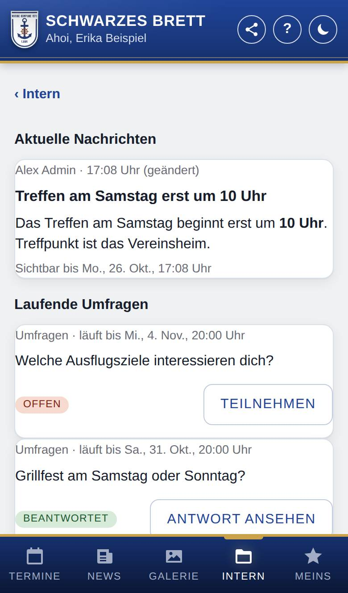
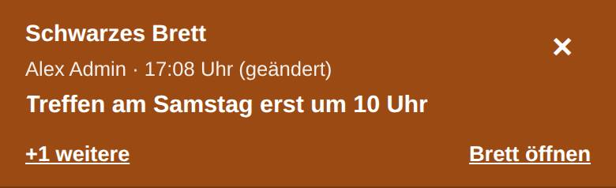
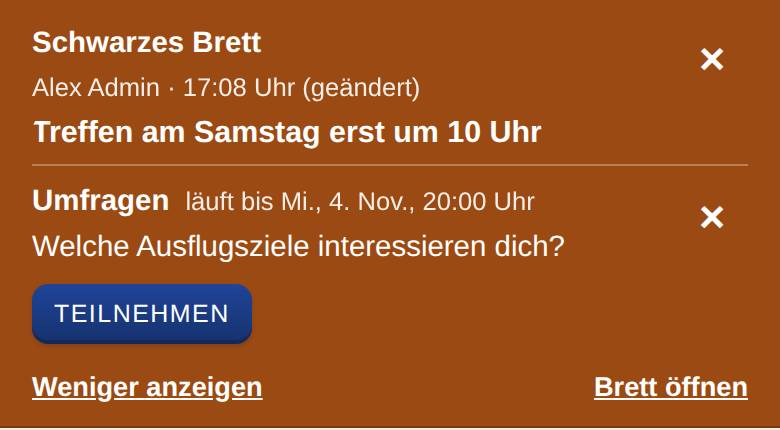

Schwarzes Brett
Nur, wenn Schwarzes Brett eingeschaltet ist.
Am Schwarzes Brett stehen dringende Nachrichten, z. B. „Training fällt heute aus“ oder „Treffpunkt geändert“, und für Mitglied die laufenden Umfragen. Der Titel neuer Einträge erscheint als farbiges Banner oben auf jeder Seite der App; auf dieser Seite liest du die Nachrichten vollständig nach.

So öffnest du die Seite
Hast du unten Intern, tippe dort auf den Knopf Schwarzes Brett. Oder tippe im Banner oben auf den Titel einer Nachricht oder auf Brett öffnen. Hast du eine Benachrichtigung oder eine Mail zu einer neuen Nachricht bekommen, öffnet ein Tipp darauf bzw. auf in der App ansehen ebenfalls diese Seite.
Das Banner erscheint nur, solange es eine Nachricht gibt oder eine laufende Umfrage, auf die du noch nicht geantwortet hast.
Was du hier siehst
- Aktuelle Nachrichten: jede Nachricht mit dem Namen der Person, die sie geschrieben hat, der Uhrzeit (bei einer geänderten Nachricht mit „(geändert)“), dem Titel, dem vollständigen Text mit Bildern und Sichtbar bis mit Tag und Uhrzeit. Gibt es keine, steht dort Zurzeit gibt es keine Nachrichten.
- Laufende Umfragen: nur für Mitglied, wenn die Marinekompanie Lank Umfragen nutzt. Jede Umfrage mit ihrem Ende, der Frage und dem Hinweis offen (noch nicht geantwortet) oder beantwortet.
- Teilnehmen bzw. Antwort ansehen: öffnet die Umfrage. Dort antwortest du oder siehst deine Antwort und die Ergebnisse.
- Beendete Umfragen: öffnet die Liste aller Umfragen, auch der beendeten.
Das Banner oben auf jeder Seite
Solange es gültige Einträge gibt, steht oben auf jeder Seite der App (außer auf dieser) ein farbiges Banner. Es zeigt die neueste Nachricht mit Namen, Uhrzeit und Titel; ein Tipp auf den Titel öffnet die ganze Nachricht. Sehr lange Titel kürzt das Banner mit „…“. Laufende Umfragen, auf die du noch nicht geantwortet hast, stehen ebenfalls darin, jeweils mit dem Knopf Teilnehmen.

- +1 weitere (bzw. +2 weitere …): klappt die übrigen Einträge auf. Weniger anzeigen klappt sie wieder zu.
- Brett öffnen: öffnet diese Seite.
- ×: blendet den Eintrag auf diesem Gerät aus.

So gehst du vor
Eine Nachricht ausblenden
- Tippe im Banner rechts neben der Nachricht auf ×.
- Die Nachricht verschwindet aus dem Banner. Auf dieser Seite bleibt sie sichtbar.
Hast du alle Einträge ausgeblendet, bleibt oben eine schmale Zeile, z. B. Schwarzes Brett · 2 ausgeblendet, mit Brett öffnen. Sie verschwindet, sobald die Einträge abgelaufen sind.
Gut zu wissen
- Jede Nachricht steht bis zu dem Zeitpunkt, den die Person beim Schreiben gewählt hat (meist 24 Stunden), und verschwindet dann von selbst, auch ohne Netz, wenn die App sie schon geladen hatte. Abgelaufene Nachrichten gibt es hier nicht mehr; das Brett ist kein Archiv. Zeiten zeigt die App immer in der Uhrzeit deines Geräts.
- Ausblenden gilt nur für das Gerät, auf dem du es tust. Wird eine ausgeblendete Nachricht oder Umfrage danach geändert, erscheint sie wieder im Banner, damit du die Änderung mitbekommst.
- Hast du auf eine Umfrage geantwortet, steht sie nicht mehr im Banner, aber weiter auf dieser Seite.
- Nachrichten können formatiert sein und Bilder enthalten. Links öffnen sich in einem neuen Fenster.
- Bei einer neuen Nachricht bekommst du eine Benachrichtigung mit ihrem Titel, wenn du die Art Schwarzes Brett: dringende Nachrichten für dein Gerät eingeschaltet hast (siehe Benachrichtigungen). Wer schreibt, kann die Benachrichtigung auch weglassen. Wird eine Nachricht nur geändert, kommt keine neue Benachrichtigung.
- Hat die Marinekompanie Lank den Mailversand eingerichtet, kommen neue Nachrichten auch per Mail an deine hinterlegte Adresse. Abschalten kannst du das unter Meins → Konto mit dem Schalter bei Benachrichtigungen. Beim Ändern kommt keine neue Mail.
- Das Schwarzes Brett sehen Mitglied und Personen mit dem internen Kalender (z. B. Anwärter). Umfragen gibt es nur für Mitglied.